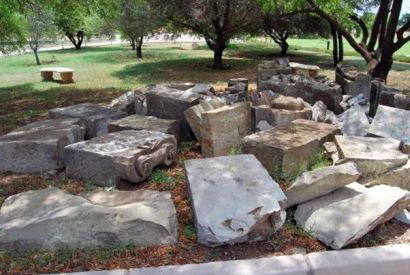
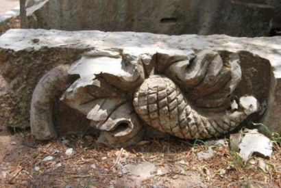
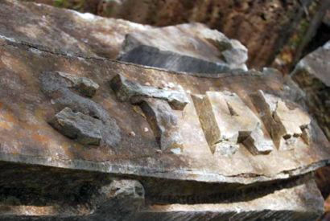

Die vierde Raadsaal van die Volksraad van die Republiek van die Oranje Vrystaat. Die Oorlogsmuseun wil nou die oorspronklike pediment of fronton wat in 1990 verwyder is, heropstel en by die Museum vertoon
|
|
Indeks: |
|
Die vierde Raadsaal van die Volksraad van die Republiek van die Oranje Vrystaat. Die Oorlogsmuseun wil nou die oorspronklike pediment of fronton wat in 1990 verwyder is, heropstel en by die Museum vertoon
|
Die Oorlogsmuseum van die Boererepublieke in Bloemfontein is verantwoordelik vir alle bewaringsprojekte wat met die Anglo Boere-oorlog (ABO) verband hou. Dikwels moet die museum self die fondse insamel as nuwe projekte opduik.
In die verlede het die Henning Familiebond by 'n paar van die Oorlogsmuseum se projekte betrokke geraak, omdat die bestuurskomitee van die Familiebond verskeie jare gelede reeds 'n beginselbesluit geneem het om steun te verleen aan kultuurprojekte wat die geskiedenis en erfenis van die Henning familie ook gedenk.
Weens die groot en onuitwisbare invloed wat die ABO op die Henning familie gehad het, het die Familiebond bygedra tot die volgende projekte van die Oorlogsmuseum:
1. Die oprigting van die Konsentrasiekamp gedenkteken wat gedurende 2010 op die terrein van die Oorlogsmuseum opgerig is.
2. Die Gedenkmuur van gesneuwelde burgers tydens die ABO wat gedurende 2012 opgerig is;
3. Die kunsprojek wat die Museum geloots het tydens die eeufeesvieringe van die Vrouemonument gedurende 2013.
|

|

|

|

|
Foto links bo wys al die blokke wat die pediment vorm. Ander foto's van individuele blokke

Die Oorlogsmuseum het onlangs weer 'n bewaringsprojek identifiseer wat buite sy jaarbeplanning val. Dit behels die restourasie van die pediment/fronton van die Vierde Raadsaal van die Volksraad van die ou Republiek van die Oranje Vrystaat - soos gesien kan word op die foto op bl 1.
Omdat so baie Hennings burgers van die Republiek van die Oranje Vrystaat was, het die bestuurskomitee van die Familiebond weereens besluit om by hierdie projek betrokke te raak. Ons het 'n skenking van R3 000.00 gemaak.
In 1990 is die Vierde Raadsaal in Bloemfontein (setel van die Vrystaatse Volksraad) wat ontwerp is deur Lennox Canning, gerestoureer. Tydens sodanige restourasie is die verweerde driehoekige pediment/fronton met die Vrystaatse wapen verwyder en vervang met 'n nuwe gebeitelde Vrystaat wapen. Die oorspronklike wapen, hoewel baie verweer (Bayswater-sandsteen), is by die Presidensie Museum geberg (buite) waar dit die afgelope paar dekades verder beskadig is. Enkele stukke is selfs verwyder.
Die wapen het 'n besondere geskiedenis met die oorlog deurdat die Britse militêre owerheid dit, soos die Transvaalse staatswapen op die Raadsaal in Pretoria deur Anton van Wouw, wou verwyder. In Bloemfontein is daar tydens die oorlog heftig in die Friend koerant gedebatteer of die wapenskild verwyder moes word al dan nie. Danksy Herbert Baker, latere argitek van die Uniegebou, het dit nie gebeur nie.
Weens konstruksie agter die Presidensie Museum (Nuwe Reserwebank) het die Oorlogsmuseum in 2014 'n versoek aan die Vrystaatse Provinsiale Museumdiens gerig om dit wat oor is van die wapenskild (28 groot klippe) na die Oorlogsmuseum oor te dra. Die versoek is toegestaan en die wapen is na die Oorlogsmuseum verskuif.
Alhoewel die wapen beskadig is, wil die museum graag weer die wapen opstel in sy oorspronklike pediment-vorm. Tereg sal konstruksie (fondasie en bouwerk van die bykans 12 meter lange en 3 meter hoë wapen nodig wees. Waar stukke ontbreek sal dit oop gelaat word, baie soos 'n legkaart waarvan sommige van die stukke ontbreek. Die volledige geskiedenis van die pediment en Raadsaal sal by die struktuur aangebring word.
Soos met al die ander projekte waar die Henning Familiebond bygedra het, sal daar weer die nodige erkenning aan die bydraende instansies verleen word - iets waarop ons as familie baie trots kan wees, want op die kennisgewingbord kan almal die Henning familie se betrokkenheid sien!

Ons het in Haantjie nr 117 van Februarie 2014 berig oor die tragiese ongeluk waarin b5.c1.d1.e1.f9.g4. Izak Stephanus Henning *19-10-1925 en sy vrou en jongste twee kinders op Kersdag 1962 gesterf het. Hulle vier oudste kinders, André Johan (15), Stephanus Albertus (Fanie) (14), Helena Maria (Marinda)(12) en Margaretha (9) is gevolglik wees gelaat.
Aanvanklik het al vier kinders by hul ouma Van der Westhuizen gaan woon, maar met verloop van tyd is eers die twee seuns na 'n weeshuis oorgeplaas en Marinda in 'n koshuis geplaas. Die feit dat die vier kinders van mekaar verwyder is, het meegebring dat hulle mettertyd alle kontak met mekaar verloor het. Margaretha is op 21-jarige leeftyd oorlede. Marinda (nou 65) het met verloop van tyd getrou en voer nou die van Heunis. Sy en haar gesin woon op Mandini in Natal.
Ons Familiebond sekretaris, Olivier Henning, kon, met die bronne tot sy beskikking, Marinda se oudste broer, André se adres vir haar deurgee. Hy woon in Milnerton, Kaapstad. Marinda het aangedui dat sy en haar man van plan was om haar broer te gaan opsoek. Hulle het mekaar immers as kinders laas gesien. Ons het onlangs die volgende brief van Marinda ontvang:
Ons was toe Kaap toe en ek het my broer Andre gekry by die adres wat u vir my gestuur het. Ons het mekaar eers nie herken nie, maar wat 'n wonderlike manier om die oujaar af te sluit.
Ons was toe ook saam na Fanie se gewese vrou. Andre het probeer reël om Fanie se kinders by sy huis te ontmoet. Ons kon ongelukkig nie wag nie aangesien ons weer die 29ste moes terug wees in Mandini. Ons het darem twee dae saam gewees en reëlings getref dat hulle Junie maand by ons sal kom bly as sy vrou se gesondheid dit toelaat.
Dankie vir die Henning Familiebond wat dit moontlik gemaak het.

Ons het oor die afgelope drie maande van die sterftes van die volgende Hennings verneem:
b7.c8.d5.e11.f2. Nicolaas Henning *9-4-1949 het sy lewe lank op die familieplaas Golden Valley in die Tarkastad-distrik met skape en beeste geboer. Hy het sowat sewe jaar gelede sy plaas verkoop en 'n "professionele" stoepsitter op Tarkastad geword. Hy het darem nog afslaerswerk gedoen en 'n matskoonmaakbesigheid van sy huis bedryf. Hy het die plaas verkoop bloot omdat hy op daardie stadium 'n goeie prys aangebied is en hy gedink het die risiko is minder as hy die plaas in kontant sou omskakel.
Nico sterf op 3 Februarie 2015 as gevolg van kanker in die ouderdom van 65 jaar en 10 maande.


b6.c4.d1.e5.f5.g6.h2. Jan Sarel Marthinus Henning *24-10-1951. Adv. Jan Henning SC, voormalige adjunkhoof van die nasionale vervolgingsgesag (NVG), het Saterdagmiddag, 7 Maart 2015 sy jaar lange stryd teen long- en breinkanker verloor.
Enig in sy soort. So het regslui vanuit alle oorde Sondag die skerpsinnige juris adv. Jan Henning SC ná sy dood beskryf. Volgens sy seun, Jan Henning jr., was Henning sr. (63) se gesin om sy bed toe hy oorlede is in die Flora-kliniek in Roodepoort waar hy die afgelope drie maande behandel is. Kanker is 'n jaar gelede by hom gediagnoseer.
"Hy was 'n fenomenale man in alle aspekte van die lewe," het Henning jr. gesê. "Sy ruim hart, vergewensgesindheid, intellek, wysheid en begrip bly ongeëwenaard. "Ons gaan hom verskriklik mis, maar het berusting dat hy die Here se tuiste bereik het en dat hy beloon word vir die respek en ontsag waarmee hy die Here sy hele lewe deur gedien het." Adv. Bulelani Ngcuka, stigter en voormalige hoof van die NVG, het gesê sy dood is 'n reuse-verlies, ook vir Suid-Afrika. "Ek is bitter hartseer. Jan (Henning) was een van ons allerbestes. Hy was 'n briljante aanklaer wat eindeloos baklei het om geregtigheid vir gewone mense te laat seëvier."
Volgens adv. Vusi Pikoli, voormalige hoof van die NVG, was Henning 'n uiters toegewyde aanklaer met 'n pragtige humorsin.
Adv. Jan D'Oliveira, voormalige adjunkhoof van die NVG, het gesê die instelling van die amp hoofaanklaer op streekgrondslag was suiwer Henning sr. se inisiatief. Daardeur het hy aan alle aanklaers op grondvlak leiding verskaf en doeltreffendheid en produktiwiteit bevorder. "Hy was gewild vir sy staaltjies wat hy vertel het en vir sy humor. Hy het respek aan die nederigste aanklaer betoon. Ek het baie van hom geleer, veral oor taktiek. "Die aftakeling van die NVG ná Pikoli se vertrek was vir hom 'n groot hartseer. Hy het die manewales in die NVG as 'n skande bestempel."
Henning sr. het in 2007 weens gesondheidsredes met vervroegde aftrede gegaan. Nadat kanker verlede jaar by hom gediagnoseer is, het hy sy boek, Stories agter die toga, gepubliseer. Die boek se eerste drukoplaag was binne weke uitverkoop.

Jan Henning se oupa Jan (foto hiernaas) was as 'n 12-jarige seun een van die groot helde gedurende die Anglo Boere oorlog. Lees gerus die gedeelte "Seuns onder 16 jaar onder die wapen", by Deel 4 van Hoofstuk 13 van die Henning Famieliekroniek.

Mense wat ingeteken is op een van die DSTV pakkette wat die kanaal Kyknet insluit, sal sekerlik weet van die baie gewilde Kwelaprogram wat deur Coenie De Villiers aangebied word. Elke jaar is daar twee reekse met name "Kwela Funnies" en "Kwela Feite en Geite".
Kykers kan hulle humoristiese tuis videofilms vir die "Funnies" reeks inskryf en enige ander interessante film vir die "Feite en Geite" reeks.
Die publiek neem deel aan die aanwysing van die beste films en aanloklike pryse kan gewen word.
Op 17 Desember 2014 is b1.c6.d6.e8.f2.g2.h2. Christo Henning *12-9-1976 en sy vrou Carmen Hanlie (gebore Pretorius) van Grahamstad aangewys as wenners van die 2014 Feite en Geite amateur natuurvideo kompetisie met 'n video van hulle kat en 'n likkewaan.

b7.c8.d8.e5.f5. Rubina Theunissa (Runa) van Straaten (gebore Henning) en haar man Simon Sauer van Straaten van Doringkloof, Centurion se tweede dogter, Runé was die afgelope drie jaar 'n student by die Potchefstroom Kampus van die Noord-Wes Universiteit (NWU). Sy het vir 'n B Com graad gestudeer. Runa het vir ons laat weet dat Runé pas haar graad met onderskeiding verwerf het - Ek stuur vir jou 'n paar foto's van Runé se gradeplegtigheid en ons kan weereens met trots sê dat sy haar B.Com Bemarkingsbestuur graad Cum Laude verwerf het. Die gradeplegtigheid was Donderdag die 12e Maart en dit was by NWU Potchefstroom kampus. Ons is regtig so trots op ons kinders wat so goed vaar.
Sy is nou besig met haar Honneurs in Internasionale Handel. Dis nou die laaste jaar van betaal vir studente. Van volgende jaar af kan ons hopelik begin skuld afbetaal.

Sauer en Runa van Straaten van Doringkloof, Centurion en hul pragtige dogter, Runé tydens haar gradeplegtigheid op 12 Maart 2015 te Potchefstroom, waar sy die graad B Com Bemarkingsbestuur met onderskeiding verwerf het
|

Ons het in die vorige Nuusbrief vermeld dat twee persone in Desember 2014 geld in die familiebond se rekening gedeponeer het, sonder om hulle name of lidnommers te verstrek. Ons het intussen uitgevind dat dit Jan Andries Henning van Frankfort en Jacobus Cornelius (Jack) Henning van Noordstad, Bloemfontein was. Weereens baie dankie ook aan hierdie twee gesinne.
Ons wil weer baie dankie sê aan almal wat met 'n maandelikse debietorder bydra. Dit is van baie groot waarde vir die familiebond - selfs al is dit net met 'n bedraggie van so min as R20.00 per maand. Vanaf Januarie 2015 dra Pieter (PJS) Henning van Ramsgate ook by deur middel van so 'n debietorder. Ons wil in besonder dankie sê vir Jan Andries Henning van Leraatsfontein, Witbank en Jan Hendrik Henning van Glenstantia wat met ruim bydraes elke maand bydra.
Ons vermeld graag die name van diegene wat eenmalige bydraes van meer as R300.00 aangestuur het. Dit word opreg waardeer en sal beslis in belang van die Henning familie en in besonder die Henning Familiebond aangewend word.
WP (Werner) Henning en sy vrou Ilse van Cresta - R500.00
Dr MEJ (Tjol) Henning en sy vrou Amanda van Lyttelton, Centurion - R500.00
PH (Piet) Henning en sy vrou Deidré van Strand - R500.00
MC (Marthinus) Henning en sy vrou Henesia van Welkom - R400.00
Wiena Wilkinson (gebore Henning) en haar man Aubrey Wilkinson van Paarl - R370.00
Marinda Heunis (gebore Henning) en haar man Marthinus van Mandini - R300.00
LD (Leon) Henning en sy vrou Hetta van Drieriviere, Vereeniging - R300.00
Marlene (M M) Page (gebore Henning) van Pietersburg - R300.00
Alle gelde kan direk in die rekening van die Henning Familiebond inbetaal word. Die besonderhede is as volg: ABSA Bank Villiersdorp (tak no 334 612); Rekeningnaam - Henning Familiebond; Rekening nr - 2890 610 423 (dit is 'n tjekrekening) Vermeld asseblief te alle tye u lidnommer (en/of voorletters en van) as verwysing. U lidnommer verskyn op die nuusbrief se koevert.

Ons het nog verskeie aandenkings beskikbaar, wat pragtige verjaardaggeskenke sal maak, of sommer net as aandenkings gekoop kan word. U kan telefonies (028 840 0113 of sel 082 355 3801) of per E-Pos (olie4@henning.org) bestel. Ongelukkig word posgeld volgens die gewig van die pakkie bygevoeg, dus sal ons u eers in kennis stel hoeveel die posgeld sal bedra, voordat u die geld in die Familiebond se rekening deponeer. Rekening besonderhede: ABSA Bank Villiersdorp (tak 334 612); Rekeningnaam - Henning Familiebond; Rekeningnr - 2890 610 423
Vermeld u lidnommer of voorletters en van as verwysing.
1. Teelepels - R50.00 elk. Pragtig as 'n stel van ses of meer, saam met 'n suikerlepel
2. Suikerlepels - R54.00 elk
3. Lapelwapens - R30.00 elk
4. Mansjetknope - R100.00 stel. Werklik pragtig! Kan met trots gedra of in 'n vertoonkas vertoon word
5. Skryfblokke (50 bladsye) - R30.00 elk
6. Henning CD - R125.00 elk (posgeld ingesluit)
7. Henning Familiekroniek - twee volumes - R450.00 (slegs 5 stelle beskikbaar)
Ons wil graag meld dat ons 'n Indeks van die inhoud van al 120 Nuusbriewe vanaf 1985 tot 2014 (30 jaar), beskikbaar het. Dit beslaan 40 bladsye en kan teen R10.00 elk bestel word.


Huisgenoot van 1 Januarie 2015 het 'n aangrypende artikel gedra oor b9.c1.d2.e1.f6.g5.h1 Pieter David Hendrik Stephanus Henning *17-8-1959 en sy agtjarige liggaamlik en verstandelik gestremde stiefseun en die liefde wat die twee vir mekaar koester. Die kind het die verstandelike ontwikkeling van 'n tweejarige. Hy dra nog doek en kan nie praat of loop nie. Hy is ook gehoorgestremd.
Ons is nie van plan om die hele inhoud van Huisgenoot se artikel aan te haal nie, maar het die artikel so aangrypend en vol deernis gevind dat ons graag die kern gedagtes met ons lesers wil deel.
Pieter en die seun se ma, was vir vier jaar lank getroud voordat hulle in 2011 geskei is. Die seun, MC Viljoen is natuurlik uit 'n vorige verhouding van sy ma gebore, maar die biologiese pa wil niks met hom te doen hê nie. Pieter en MC het egter altyd 'n goeie verhouding gehad.
Twee maande na Pieter Henning se egskeiding het sy voormalige vrou hom gebel en gesê dat hy die kind moet kom haal, of sy gaan hom in 'n plakkerkamp aflaai. Pieter het onmiddelik op 'n vliegtuig na die Oos-Kaap geklim om MC te gaan haal. Sedertdien versorg hy die kind met liefde - soos sy eie - en het gereël dat hy die nodige mediese behandeling kry wat nodig is vir hom om beter te funksioneer.
Vir die afgelope jaar en 'n half het Pieter 'n vriendin, Laura Steyl (43) wat Pieter bystaan met die versorging van MC. Hy vorder so goed dat hulle glo dat hy een of ander tyd selfs sal kan begin loop - maar dit kan dalk nog 'n lang pad wees. Wat die toekoms inhou, weet hulle nie. Intussen gee hulle vir die brose seuntjie al die liefde wat hulle kan. "Ja jong, as daai mannetjie eers in jou hart ingekruip het, kruip hy nie weer daaruit nie," sê Pieter en sy oë rus sag op die glimlaggende woelwater.